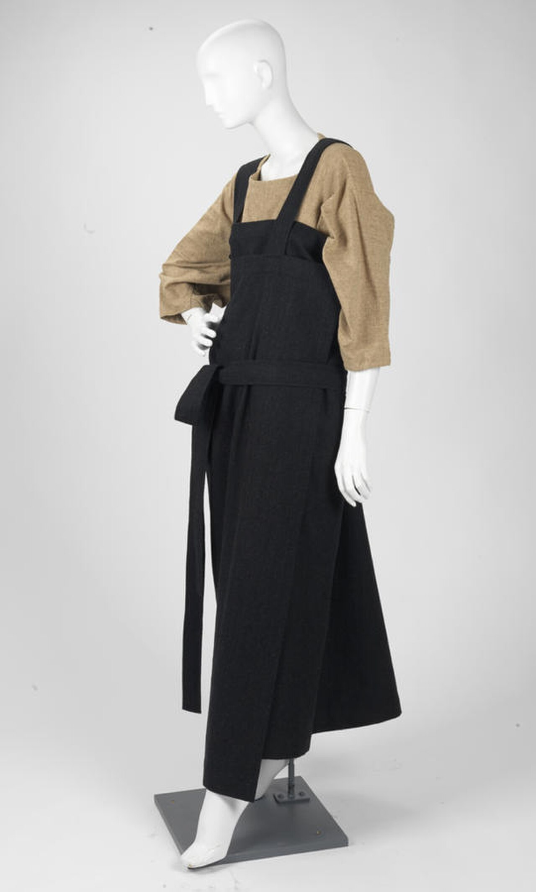
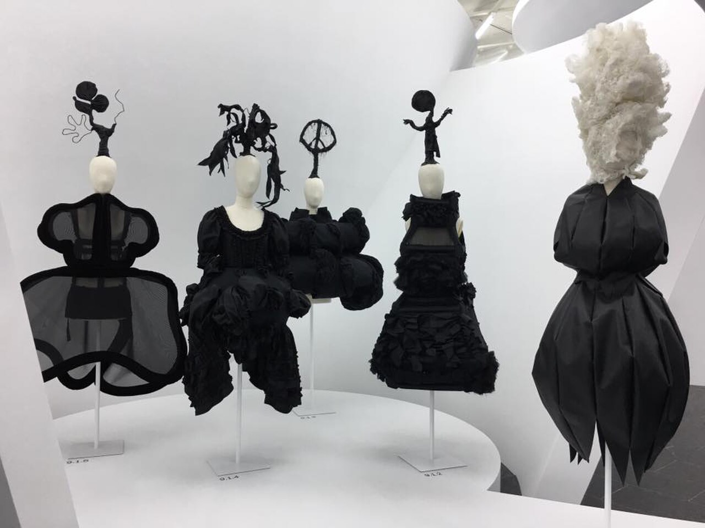

第 03 課 / 17 分鐘 / 時尚
之間
川久保玲 Rei Kawakubo（1942 年生）

三分鐘版本
川久保玲 1942 年 10 月 11 日生於東京。她在慶應義塾大學研讀美術、文學與美學史，之後從事廣告業，並於 1969 年創立 Comme des Garçons。她自 1975 年起在東京發表作品，1981 年 4 月在巴黎首次登場——與山本耀司同一個季度，也正是法國媒體「發現日本時尚」的那一刻。
早期在巴黎發表的服裝是黑色的、oversize 的、不對稱的，而且看似未完成。它們把身體藏起來，而不是展示它。媒體一片譁然；這些衣服如今已是大都會博物館、V&A 與 NGV 的永久館藏。1997 年，她發表了《身體遇見衣、衣遇見身體》(Body Meets Dress, Dress Meets Body)，也就是大家口中的「腫塊與隆起」(Lumps and Bumps)：臀、背與肩上的填充物扭曲了模特兒的輪廓，而格紋布料則讓整件事顯得居家。
2004 年，她在倫敦開設第一家 Dover Street Market，那是一間以「不斷變動的裝置」為概念打造的店。2017 年，大都會博物館的服裝學院為她舉辦完整回顧展《之間的藝術》(Art of the In-Between)，展出約 140 件自 1980 年代初以降的女裝。2026 年她仍在創作，在紐約 Independent 藝術博覽會上展出近作的裝置。
年代與背景資料：NGV〈川久保玲：重新定義時尚〉；大都會博物館 2017 年展覽。
1981 年的震撼
川久保玲與山本耀司並不是以一個協調一致的運動之姿抵達巴黎的。他們在同一個季度、帶著不同的品牌與不同的論證前來，是媒體把他們湊成了同一個分類。那些衣服是黑色的，版型很大，既不用腰帶收緊腰身，也不托高胸部。在法國人的眼中，它們像是一種對身體的拒絕。
那份拒絕正是這一課的起點。川久保玲無意讓女人看起來更瘦、更高、或更誘人。她在意的是：當衣服不再服從身體的輪廓、開始自成一格時，會發生什麼事。有時那看起來優雅，有時那看起來像腫瘤。重點在於——身體不再是標準。
「《身體遇見衣、衣遇見身體》……確實挑戰了輪廓的構成方式。」 Francesca Granata，談於 MoMA 語音導覽


三件必知作品
1. 1981 年巴黎首秀
不是單一件衣服，而是一整個系列：黑色、oversize、層層疊疊、不對稱，經常帶著毛邊。它如今看起來溫和，是因為它發明的語言，早已被每一個極簡衣櫥吸收。但在 1981 年，它讀起來像是對法國剪裁的羞辱——也像是一種關於「女人能穿什麼」的新觀念。
2. 《身體遇見衣、衣遇見身體》(Body Meets Dress, Dress Meets Body)（1997）
「腫塊與隆起」系列。填充的形體被放置在腹部、臀部、背部與肩上，創造出一種既不似懷孕、也不纖瘦、也不對稱的輪廓。格紋布料讓它看起來像是孩童的洋裝。媒體把那些襯墊稱作腫瘤；這個系列如今卻是每一部時尚史中的固定戲碼。它是川久保玲方法最清楚的例子：從身體出發，然後拒絕它既有的形狀。
3. 《之間的藝術》(Art of the In-Between)（2017）
大都會博物館的這場展覽，把她的職涯框架為一連串由她的衣服所佔據的界線：時尚／反時尚、設計／非設計、客體／主體、衣服／非衣服。這個標題，是對她作品最精煉的一字總結。她並不「反對」時尚；她在時尚與其他一切之間的縫隙裡工作。
商店即作品
Dover Street Market 於 2004 年在倫敦開幕；銀座店則在 2008 年跟進。它是一間像展覽般設計、且不斷變動的百貨公司：客座設計師、粗獷的收邊、像標本一樣懸掛的衣服。川久保玲的零售事業並不是與她的時尚分開的另一門生意；它是同一套關於展示、分類與驚喜的論證。
造訪時，不要去找某個「造型」。看看衣服是如何被擺放的。這間店正在告訴你：川久保玲認為一件衣服是什麼——一個擁有自身生命的物件，而不是讓穿者變得更美的工具。
觀看影片
親自觀賞川久保玲的地方
- Dover Street Market 銀座——商店即裝置；認識當下 CDG 宇宙最直接的方式。
- Comme des Garçons 青山／丸之內——旗艦店與百貨專櫃；請要求看當季系列，而不只是香水。
- 大都會博物館，紐約——2017 年的展覽已結束，但服裝學院的館藏與時尚展廳，仍是最深入的歷史視角。
- NGV，墨爾本——Collecting Comme 館藏，一個擁有逾六十五件作品的川久保玲重要收藏。
- V&A，倫敦——時尚展廳與研究室；可洽詢檔案庫的開放。
這些衣服經常以平放或穿戴在抽象假人模特兒上展示。那是刻意的：川久保玲要你看見結構，而不是一具擺著姿勢的身體。
自我檢測
目前 0 / 0 題答對1. 1997 年哪個系列被稱為「腫塊與隆起」？
2. 川久保玲在 1969 年創立了什麼？
3. 2017 年的《之間的藝術》展覽由哪間博物館舉辦？
一手資料
先從大都會博物館的展覽網頁開始，再聽 Francesca Granata 談MoMA 語音導覽。2017 年的圖錄《川久保玲／Comme des Garçons：之間的藝術》，是關於這批作品最好的單行本。
要記住的一件事：川久保玲不為身體穿衣；她提出一種身體。